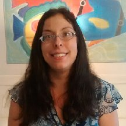

Copyright 2015
Infinite Limits L.L.C.
All Rights Reserved
Brittany Lewis
Tutor
-  Tutor: Brittany Lewis
Brittany Lewis finds no greater fulfillment than when she is serving others and she has devoted her life to doing so. In High School, she volunteered at a nursing home five days a week, helping to care for elderly nuns. She also did volunteer work at a daycare for low-income families. After this she worked for SMOC and then the YMCA as a Preschool Teacher. She began taking college courses at night, while still in High School and working during the day. She became Lead Teacher certified for birth-Pre-K within just one year of working in the field. She then worked diligently to earn her Associate's Degree in Elementary Education. She has assisted in teaching Children's Sunday School classes, as well as teaching some of her own. Brittany has been married for almost seven years and has two small children. She greatly enjoys reading, gardening and swimming.